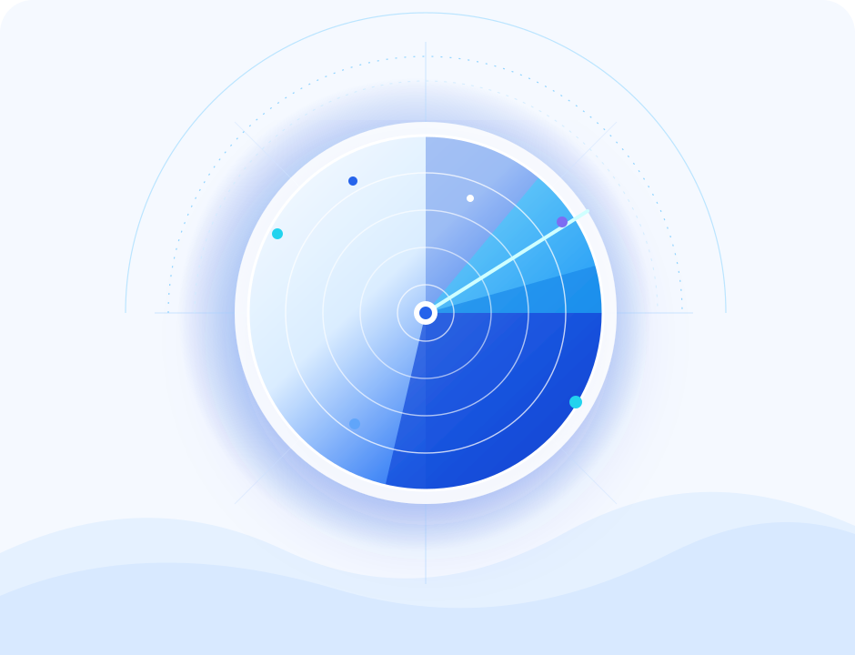

01
看见窗口
别等行业洗牌后，才开始看 AI
每天筛出值得试、值得投、值得见的人和方向，把增长机会提前放到你的会议桌上。
观AI之澜，识商业之势
从热闹里筛信号，从信号里找机会。观澜AI 帮你把每天新增的 AI 变化，压缩成更早、更清晰、更可行动的商业判断。

每天筛出值得试、值得投、值得见的人和方向，把增长机会提前放到你的会议桌上。
用趋势、案例和标签形成更早判断，输出观点、议题、咨询线索和合作筹码。
从客户、场景、融资和产品采用里发现可撮合的关系，让资源流向更快成事的方向。
看产品、客户和商业化证据，避开只有故事的热闹，找到更值得长期跟踪的标的。
Decision Brief
WaveSight AI
注册后查看证据链、评分逻辑、趋势复盘和机会拆解，把 AI 变化转成你能推进的商业行动。
注册试读